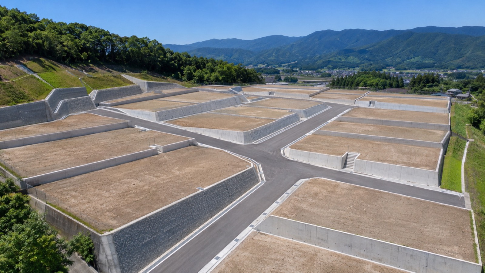
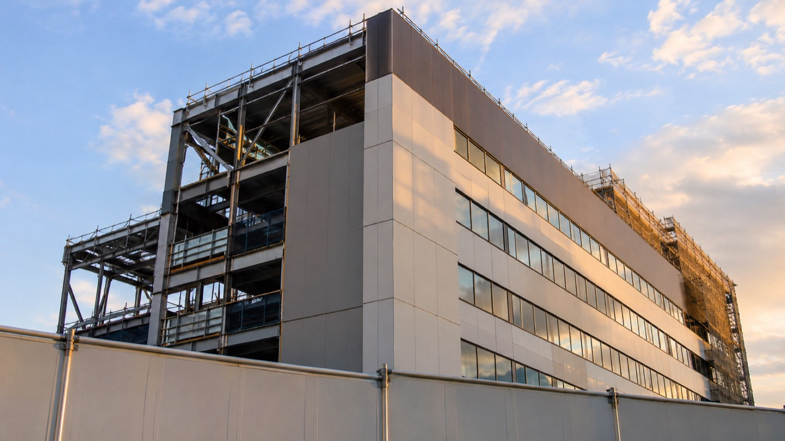
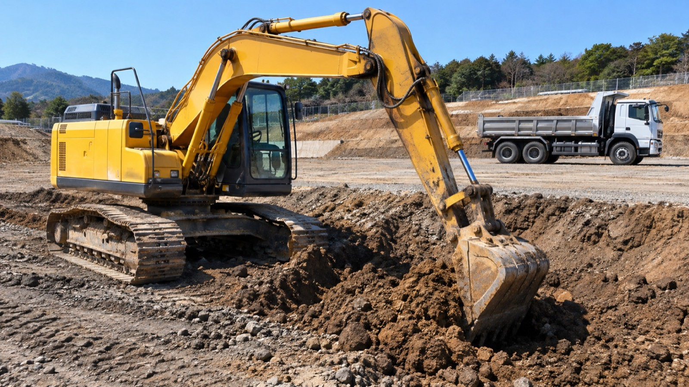
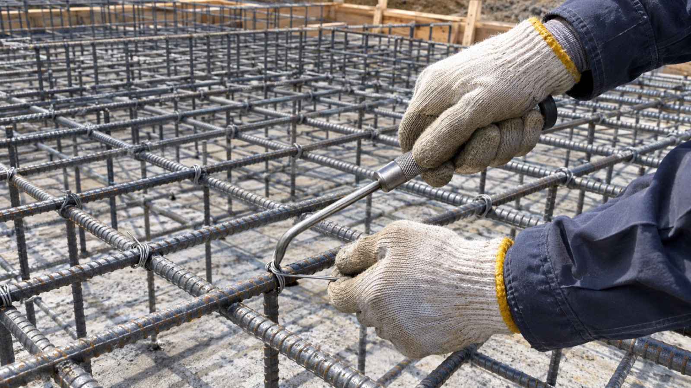
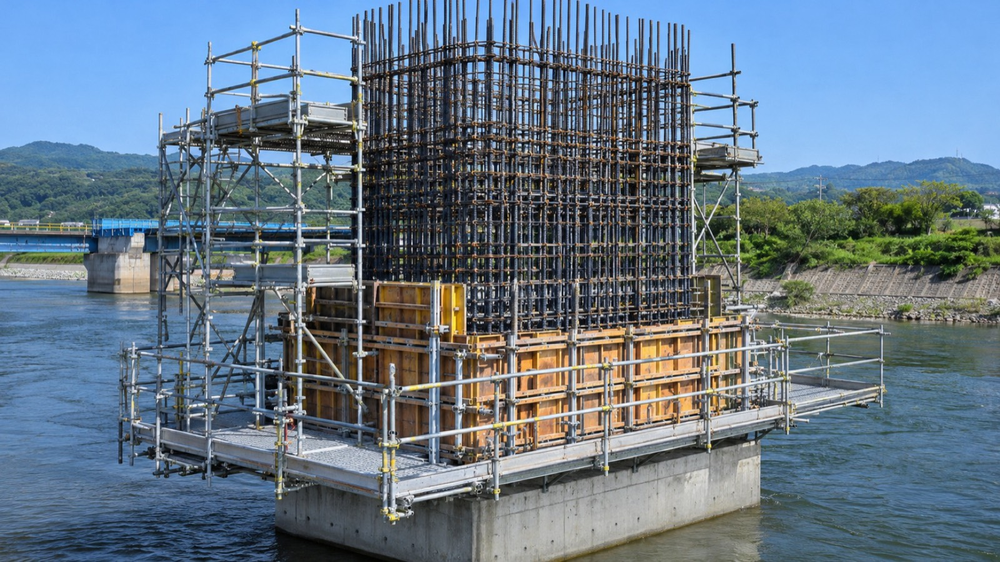
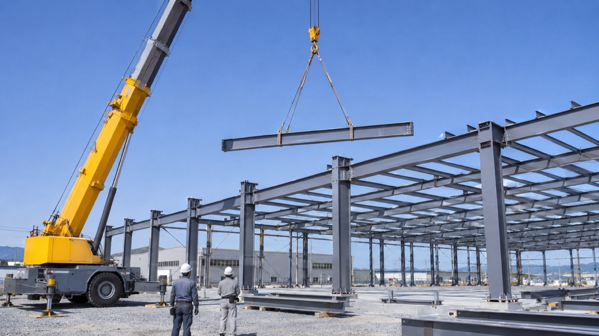

2025山の斜面を28区画の宅地へ
広島県東広島市｜宅地造成工事
機械整備土工鉄筋足場溶接
- 工期
- 7か月
- ポイント
- 擁壁の基礎まで土工班から鉄筋班へ直接引き継ぎ
SOSHO CONSTRUCTION
HIROSHIMA / EST. 2009
FROM MAINTENANCE TO WELDING重機の整備から溶接まで。
現場の最初から最後を、
ひとつの会社で。
SITE DATA
うち国家資格保有 58名
0.1㎥〜1.4㎥クラス
2021年11月から継続中
重機・人員が自社のため
※数値はすべてサンプルです
ABOUT US
完成すれば見えなくなる。
だから、手を抜けない。
道路、橋、工場、住宅地。
建物の寿命を決めるのは、
完成したら見えなくなる基礎や骨組みです。
礎匠は2009年から広島で、
その「見えなくなる部分」をつくってきました。

PROCESS
その5つを、すべて自社でやっています。スクロールすると、現場が建っていきます。
現場が始まる前に、まず重機を整える。自社工場で点検・修理をしてから現場へ出すので、「当日、重機が動かない」が起きません。現場で止まっても、整備士がその日のうちに向かいます。

掘削・盛土・造成・整地。整備を終えた自社の重機46台で、地面をつくります。宅地造成のような広い現場から、狭い市街地の掘削まで対応します。

掘った地面に、骨組みの鉄筋を組みます。加工から組立まで自社。土工と同じ職長が段取りを見ているので、掘削が終わった翌日から配筋に入れます。

高い所の作業の前に、安全な足場を架けます。住宅から中高層まで。架設から解体まで同じ班が担当し、現場の安全基準は工程表と一緒に共有します。

最後に鉄骨をつなぐ。現場溶接から機械部品の補修まで、有資格者が施工します。ここまで来て、ひとつの骨組みが立ちます。

窓口はひとつ、工程表もひとつ。
それが、礎匠の一貫施工です。
WORKS

2025広島県東広島市｜宅地造成工事

2024広島県三次市｜橋脚補強工事

2024広島県廿日市市｜工場新築工事
広島県広島市｜事務所新築工事
※事例・写真はサンプルです（写真はAIで作成したイメージ）
FOR GENERAL CONTRACTORS
5工種の段取りと連絡は、担当者1名がまとめて受けます。
自社の整備工場があるので、故障しても代わりの重機と整備士をすぐ出せます。
作業員名簿・資格証の写し・重機の点検記録は、着工前にまとめてお渡しします。
| 対応エリア | 広島県全域・山口県東部・岡山県西部 |
|---|---|
| 同時に入れる現場 | 最大12現場 |
| 1現場の最大人員 | 30名 |
| 重機 | 油圧ショベル 0.1〜1.4㎥ ／ クローラークレーン ／ ダンプ |
| 主な資格 | 1級土木施工管理技士／車両系建設機械／玉掛け／足場の組立て等作業主任者／JIS溶接技能者 |
※数値・資格はサンプルです
※架空の会社です。住所・電話番号・許可番号は実在しません